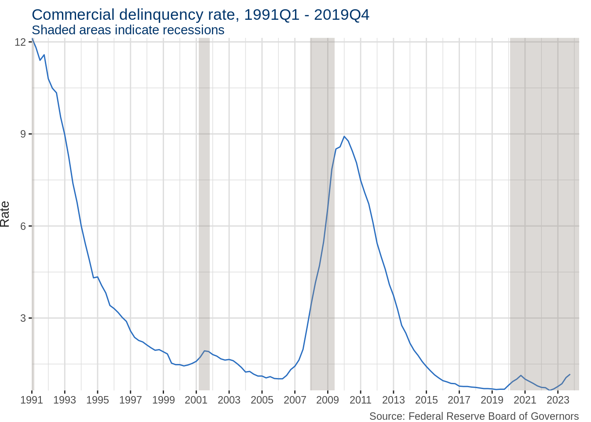

This post was originally published on the YPFS Systemic Risk blog
Government-mandated shutdowns in response to the novel coronavirus have triggered delinquencies among commercial mortgages as businesses struggle with revenue. The purpose of this article is to characterize the risks to US commercial real estate posed by COVID-19 responses. Due to reporting incentives, data on mortgages packaged into commercial mortgage-backed securities (CMBS) is more accessible and granular than data on the whole commercial mortgage market. Even though CMBS-associated properties constitute just 20% of outstanding multifamily and commercial debt, the data generated by such properties can indicate how the whole commercial real estate sector may be affected. On June 4, commercial real estate research firm Trepp reported its largest jump in delinquencies among mortgages involved in the $1.4 trillion CMBS market, with the rate spiking from 2.29% to 7.15%.
There is real stress on commercial landlords. But that stress sits narrowly within the commercial market. The same Trepp report disaggregated delinquencies, noting nearly 20% of lodging, and more than 10% of retail mortgages were delinquent in May. Less than 4% of multifamily, office, and industrial mortgages were delinquent over the same period. Despite historically high unemployment, government stimulus supports have perhaps helped sustain rental payments. Publicly traded equity real estate investment trusts (REITs) invested in apartments collected at least 93% of rents in April, with most trusts collecting 95% or more. Meanwhile, offices continue to operate remotely, and warehousing has become more valuable as delivery services take on new importance.
Retail shows signs of life
The speed at which consumers return to retail and lodging will factor importantly into the viability of mortgages in those sectors. The same data on publicly traded equity REITs reports rent collection figures for several owners of regional malls and shopping centers. Overall, between 50% and 65% of April rents were collected in shopping centers, while regional malls collected just 26% to 30% of rental payments.
As states re-open, rent payments may increase quite quickly. In Arizona, Florida, Georgia, and Texas, as of June 2, retail foot traffic had already surged from its April nadir, but only to 38-52% of 2019 levels. Retail nationwide grew 17.7% in May, beginning to make up for sales contractions in March and April of 8.3% and 14.7% respectively. Further, the distribution of volume among types of businesses is unknown. The lockdowns have already caused the bankruptcy of JC Penney and Hertz, with AMC movie theaters currently being threatened. But stock data indicates that investors believe retail real estate has already bottomed out. After crashing in late February, prices of several large mall operators and REITs have stabilized and trended up.
Code
library(tidyverse)
Warning in system("timedatectl", intern = TRUE): running command 'timedatectl'
had status 1
Code
library(lubridate)read_csv("data/reit.csv") %>%group_by(symbol) %>%mutate(adjusted =100*adjusted/adjusted[date ==min(date)]) %>%ungroup() %>%ggplot(aes(date, adjusted)) +geom_line(aes(col = symbol), show.legend = F) +stat_summary(fun ="mean", color ="#286dc0", size =1, geom ="line", show.legend = F) +scale_color_grey() +scale_x_date(expand =c(0,0)) +scale_y_continuous(limits =c(0, 110), expand =c(0, 1)) +labs(x =NULL, y ="Percent of Feb. 21 closing price", title ="Price change of NYSE-listed REITs since first confirmed case", subtitle ="Unweighted daily average in blue", caption ="Source: Yahoo Finance") +theme(plot.title =element_text(color ="#00356b", vjust =-1.67), plot.subtitle =element_text(color ="#00356b", vjust =-1), plot.caption =element_text(color ="#4a4a4a"),axis.title =element_text(color ="#222222"), axis.text =element_text(color ="#4a4a4a"), axis.ticks =element_line(color ="#222222"),panel.background =element_rect(fill =NA), panel.grid =element_line(color ="#dddddd"),legend.position ="bottom")
The market’s gradual recovery may have been informed by other indicators than the overall delinquency rate. Though 7.15% of securitized commercial mortgages were delinquent in May, 70% of those were only one month late. Trepp noted that a large number of mortgages remained in their 30-day grace period or actually reverted to current on their payments, though historically high delinquencies should still be expected.
Despite these expectations of recovery, the woes for commercial real estate may have just begun. Financial Times pointed to June as a crucial test for businesses, since debt two months late often triggers serious penalties. Moreover, data collected by the Federal Reserve Bank of St. Louis since 1991 show commercial delinquencies spiking as recessions end (Fig 2). Moreover, bond prices for CMBS exposed to lodging have tumbled. The same Financial Times article noted that BBB-rated tranches exposed to lodging shed approximately 40% of their value since early March. The asset specificity of hotels only lowers the value of real estate already faced with structural devaluation by services such as Airbnb.
Code
delin <-fredr(series_id ="DRCRELEXFACBS") #retreive delinquency data using fredrrecessions <-read_csv("start, end1990-07-01, 1991-03-012001-03-01, 2001-11-012007-12-01, 2009-06-012020-02-01, NA") #add recessions from https://fredhelp.stlouisfed.org/fred/data/understanding-the-data/recession-bars/
Rows: 4 Columns: 2
── Column specification ────────────────────────────────────────────────────────
Delimiter: ","
date (2): start, end
ℹ Use `spec()` to retrieve the full column specification for this data.
ℹ Specify the column types or set `show_col_types = FALSE` to quiet this message.
Code
recessions[nrow(recessions), 2] <-Sys.Date() #update current recession with today's dateggplot(delin) +geom_line(aes(date, value), color ="#286dc0", show.legend = F) +#line plot of trade-weighted US dollar indexgeom_rect(data =mutate(filter(recessions, end >=min(delin$date), start <=max(delin$date)), #only include recessions ending after start of series and beginning before end of seriesstart =if_else(start <min(delin$date), min(delin$date), start)), #trim start of overhanging recessionaes(xmin = start, xmax = end, ymin =-Inf, ymax =Inf), #define sides of rectanglefill ="#978d85", #Yale shading coloralpha = .33) +#opacityscale_x_date(expand =c(0,0), date_breaks ="2 years", date_labels ="%Y") +scale_y_continuous(expand =c(0,0)) +labs(x =NULL, y ="Rate", title ="Commercial delinquency rate, 1991Q1 - 2019Q4", subtitle ="Shaded areas indicate recessions", caption ="Source: Federal Reserve Board of Governors") +theme(plot.title =element_text(color ="#00356b", vjust =-2), plot.subtitle =element_text(color ="#00356b", vjust =-1), plot.caption =element_text(color ="#4a4a4a"), plot.margin =margin(r =10),axis.title =element_text(color ="#222222"), axis.text =element_text(color ="#4a4a4a"), axis.ticks =element_line(color ="#222222"),panel.background =element_rect(fill =NA), panel.grid =element_line(color ="#dddddd"))

Support for commercial real estate must proceed carefully
Landlords and owners are navigating treacherous waters should commercial tenants require serious rent assistance. While CMBS loans tend to be non-recourse, it is standard practice for loans to feature “bad boy” covenants designed to guard against principal-agent risk. Such covenants provide recourse in the event that borrowers commit actions that (in normal times) are irresponsible. Real estateattorneys point to two such actions in particular: significant rent renegotiation, and taking on senior indebtedness without investor consent.
US programs have thus far steered clear of these debt covenants, and offer viable channels should further support be authorized. The Payroll Protection Program (PPP), offering forgivable and unsecured loans to businesses, recently expanded the amount that could be used for non-payroll expenses to 40%, opening the door to rent support. Borrowing terms for the three programs under the Main Street Lending Program have also eased. The Priority and Extended lending facilities (MSPLF and MSELF, respectively) require loans to be secured, and prohibit subordination, but carve out exceptions for outstanding mortgage debts.
Given that these programs appear to avoid the dangers posed by “bad boy” covenants, it seems likely that strained borrowers are equipped with the resources to secure credit lifelines to at least prolong defaults for several more months. On the other hand, it seems unlikely that the Federal Reserve (Fed) would engage private CMBS markets in a more direct fashion. Thus far only two Fed actions support private CMBS. In March it included agency CMBS in its plan to make Open Market Desk purchases of $200 billion of MBS, and in April it expanded the eligible collateral for the Term-Asset Securities Lending Facility to include AAA tranches of CMBS. A previous YPFS article found that the Fed’s purchasing announcement had a positive effect on agency mortgage REITs (mREITs) while having only minimal effects on non-agency residential mortgage REITs.
Additionally, the CARES Act prohibits the payment of dividends by corporations receiving support. While several programs have received blanket waivers from the Treasury Department, the Main Street Lending Facility has not. The legal structure of REITs requires the payment of dividends, and many REITs have opted to pay mostly in stock. REIT trade associations have already written to the Treasury Department requesting a waiver for this particular case, while the Internal Revenue Service has reprised rules adopted during the Global Financial Crisis, allowing REITs to hold (and therefore distribute) less cash.
The New York Times highlighted name-brand tenants–Gap, LVMH, Starbucks–that had stopped paying rent and started renegotiating leases. The article noted that “the strongest tenants — those most able to pay — are driving the hardest for a discount.” When renters know that the options for landlords are either lease renegotiation or a total loss of income, those with the ability to pay may augment the demands of those that cannot pay, further pressuring landlords.
A Deloitte report noted that real estate development had flagged, with more than half of US construction firms surveyed halting projects. Social distancing rules precipitated decreased demand and disrupted construction sites. Commercial real estate’s sensitivity to economic downturns compounded the effects of decreased demand. The Deloitte report suggested that developers adapt rental properties to meet the needs of a changed society and strengthen resilience to future pandemics. The shock to brick-and-mortar businesses is likely to accelerate permanent transitions to online retail, work, and customer service across sectors. While several large companies have started these transitions, they will likely take several years to complete. Such a timeframe would flatten and spread the risks to commercial real estate finance.
In contrast, the greatest short-term risks posed by US commercial mortgages sit narrowly in lodging and retail, though high-turnover coworking spaces have already seen slashed revenues. CMBS-associated mortgages account for one fifth of outstanding commercial debt. While data are more widely and finely available for properties underlying CMBS loans, concerns similar to those discussed above exist with respect to non-securitized commercial mortgages. Where investors are exposed to lodging, prices have slumped, and questions abound regarding the sector’s long-term viability as nearly 20% of the CMBS-associated mortgages were reported delinquent in May. Retail activity is growing, but there is concern as to whether the recovery will be fast enough to stave off default in a sector with more than 10% of securitized mortgages in delinquency, which could hamper the real economy’s general pace of recovery.